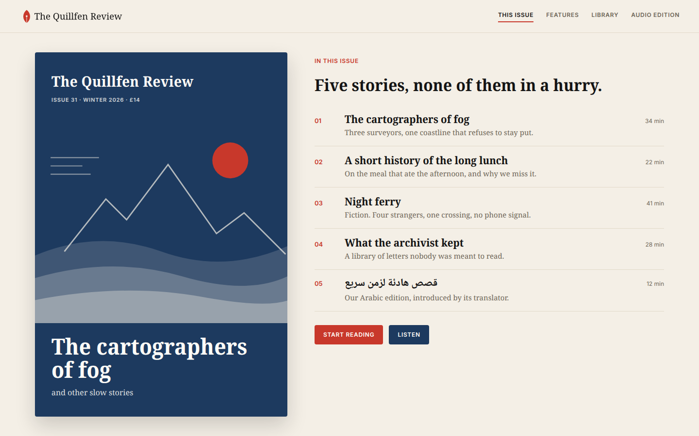
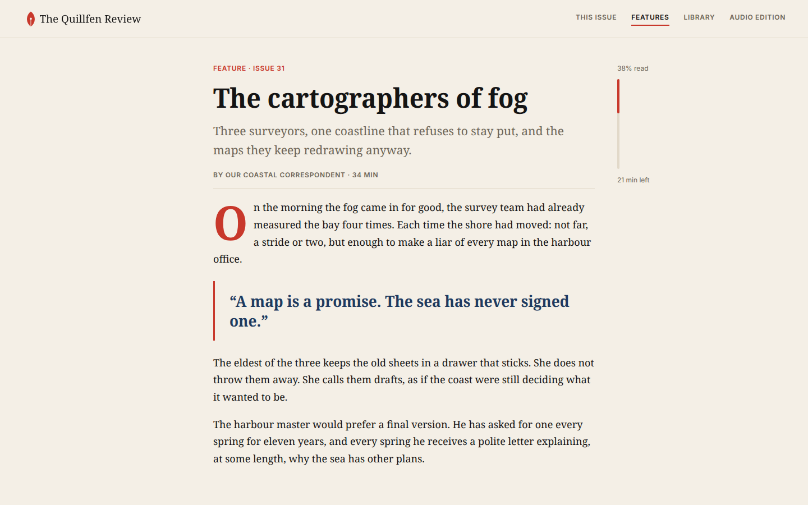
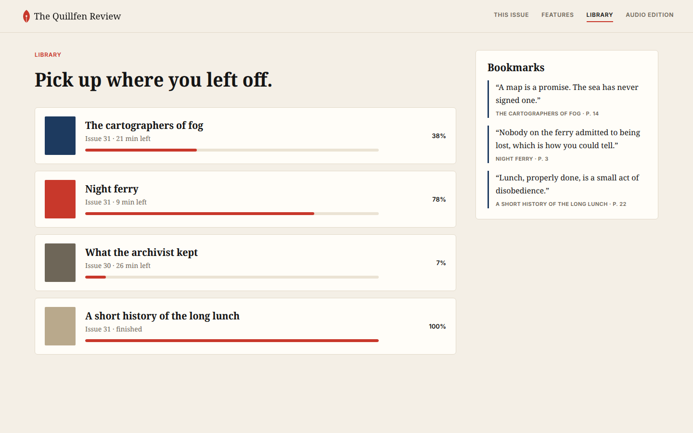
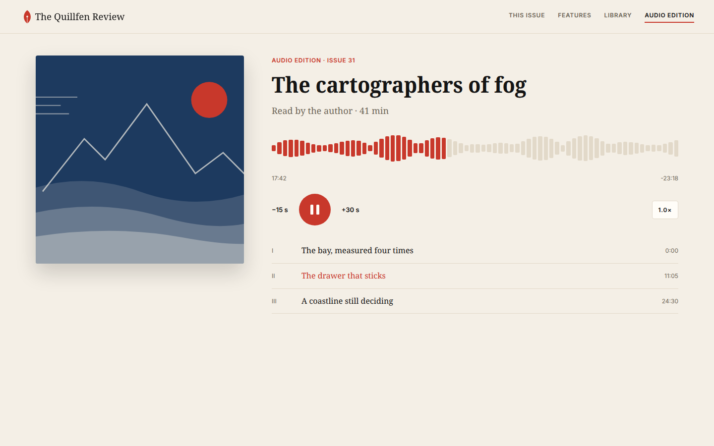

Four issues a year
Two hundred pages, sewn not glued, and posted to you in a plain brown sleeve.
Issue 31 · Winter 2026
Long reads, printed quarterly, read anywhere.

Inside the issue
Read it on paper, pick it up on your phone where you left off, or let a narrator take the night shift.



Two hundred pages, sewn not glued, and posted to you in a plain brown sleeve.
Digital
Thirty-one issues and counting, searchable, annotatable and blessedly free of pop-ups.
Audio
Every feature narrated in full, so the long walk home finally earns its name.